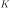
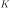

Next: Mixture of Bernoulli Up: Clustering Analysis Previous: K-means clustering
The Gaussian mixture model (GMM) models the given dataset
![${\bf X}=[{\bf x}_1,\cdots,{\bf x}_N]$](img9.svg) by a linear combination of
 Gaussian distributions:
by a linear combination of
 Gaussian distributions:
 is the weight for the kth Gaussian
, satisfying
is the weight for the kth Gaussian
, satisfying
| (258) |
This GMM model, in combination with the method of
expectation maximization (EM),
can be applied to clustering analysis. Specifically, we first
model the clusters
by Gaussians
,
then estimate all model parameters denoted by
based on the given dataset, and finally obtain the probability
for  to belong to
to belong to  for all
for all
 and
, and assign
to is
.
and
, and assign
to is
.
Note that the GMM model in Eq. (257) is actually the same
as Eq. (11) in the naive Bayes classification. These two
methods are similar in the sense that each cluster or classe
is modeled by a Gaussian
,
weighted by , and the model parameters  and
and
 ,
as well as , need to be estimated based on the given dataset.
However, the two methods are different in that the dataset
,
as well as , need to be estimated based on the given dataset.
However, the two methods are different in that the dataset  in the supervised naive Bayes method is labeled by
in the supervised naive Bayes method is labeled by  , while
here in GMM the dataset is not labeled. However, we can introduce a
latent or hidden variable
, while
here in GMM the dataset is not labeled. However, we can introduce a
latent or hidden variable  for the labeling of the samples
in the given dataset .
for the labeling of the samples
in the given dataset .
Specifically, the latent variable
![${\bf z}=[z_1,\cdots,z_K]^T$](img962.svg) is a
binary vector, of which all components are binary random variables
. Only one of these components is 1, e.g.,
, indicating a sample
is a
binary vector, of which all components are binary random variables
. Only one of these components is 1, e.g.,
, indicating a sample  in the dataset belongs to
the kth cluster , while all others are 0, i.e., these
binary variables add up to 1,
in the dataset belongs to
the kth cluster , while all others are 0, i.e., these
binary variables add up to 1,
 .
.
We further introduce the following probabilities for each of the
clusters
 :
:
, represented by :
 |
(259) |
belongs to one and only one of the
clusters, the events
are mutually
exclusive and complementary, i.e., the prior probabilities add
up to 1:
| (260) |
, assumed
to be a Gaussian:
and :
, we get the Gaussian mixture model, the distribution
 of any sample regardless to which cluster
it belongs:
Note that Eqs. (261), (262), and
(263) are the same as Eqs. (9),
(10), and (11) in the naive Bayes
classifier, respectively.
of any sample regardless to which cluster
it belongs:
Note that Eqs. (261), (262), and
(263) are the same as Eqs. (9),
(10), and (11) in the naive Bayes
classifier, respectively.
All such probabilities defined for can be generalized to
for all clusters:
 |
 |
(264) | |
 |
|
(265) | |
 |
|
(266) |
Given the dataset
containing
 i.i.d. samples, we introduce corresponding latent variables
in
i.i.d. samples, we introduce corresponding latent variables
in
![${\bf Z}=[{\bf z}_1,\cdots,{\bf z}_N]$](img979.svg) , of which
, of which
![${\bf z}_n=[z_{n1},\cdots,z_{nK}]^T$](img980.svg) is the labeling of ,
i.e., belongs to if (while
for all
is the labeling of ,
i.e., belongs to if (while
for all  ). Note that here
is defined in the same way as
in maxsolft regression, both as the labeling of , with the
only difference that
). Note that here
is defined in the same way as
in maxsolft regression, both as the labeling of , with the
only difference that  is provided in the training data available
for a supervised method, but here
is provided in the training data available
for a supervised method, but here  is a latent variable not part
of the data provided for unsupervised clustering. Now we have
is a latent variable not part
of the data provided for unsupervised clustering. Now we have
| (267) |
 to
be estimated can be expressed as:
to
be estimated can be expressed as:
|
|||
|
(268) |
as those that maximize
the likelihood function
or its log function
, here we find the model parameters in
as those
that maximize the expectation of the log likelihood function above
with respect to the latent variables in . This method is
therefore called expectation maximization (EM), containing the
following two iterative steps:
We first find the posterior probability for any to belong
to any (indicated by and for all )
is modeled by
, and they add up to 1, ss the prior probabilities
:
| (271) |
We also note that the posterior probability defined above
represents a soft decision, in the sense that it is possible
for a to belong to each with probability
for all
, instead of a hard decision, in the sense
that belongs to only one specific with ,
while for all , as in the case of K-means clustering.
We also find the expectation of the log likelihood with respect to
the latent variables in :
 |
(273) |
We first set to zero the derivatives of the expectation of
the log likelihood with respect to each of the parameters in
 , and then solve
the resulting equations to get the optimal parameters.
, and then solve
the resulting equations to get the optimal parameters.
:
Due to the constraint , we first construct the Lagrangian function compsed of the log likelihood as the objective function and an extra term for the constraint:
| (274) |
to zero:
|
|||
|
(275) |
, we get
where we have defined
that satisfies
| (278) |
| (279) |
| (280) |
in Eq. (8)
used in the naive Bayes classification, but here  defined in
Eq. (277) is the sum of the probabilities for all
data samples to belong to , instead of the number of data
samples in (unknown in this unsupervised case).
defined in
Eq. (277) is the sum of the probabilities for all
data samples to belong to , instead of the number of data
samples in (unknown in this unsupervised case).
:
. Multiplying
on
both sides, we get
| (282) |
we get
 |
(283) |
:
 |
(285) |
on both sides of the equation above
we get
| (286) |
, we get
| (287) |
In summary, here is the EM clustering algorithm based on Gaussian mixture model:
, covariance
and coefficient
.
Find the responsibility for all data points and all
clusters and then :
| (288) |
Recalculate the parameters that maximize the likelihood function:
 |
|
||
 |
|
 |
|
 |
|
(289) |
to belong to cluster
is
, and it is therefore
assigned to if
.
We can show that the K-means algorithm is actually a special case
of the EM algorithm, when all covariance matrices are the same
, where
 is a
scaling factor which appraoches to zero. In this case we have:
is a
scaling factor which appraoches to zero. In this case we have:
| (290) |
is:
| (291) |
| (292) |
to with the smallest distance. Also
 defined in Eq. (277)
as the sum of the posterior probabilities for all data
points to belong to becomes as the number of
data samples assigned only to . In other words, now
the probabilistic EM method based on both
defined in Eq. (277)
as the sum of the posterior probabilities for all data
points to belong to becomes as the number of
data samples assigned only to . In other words, now
the probabilistic EM method based on both  and
and
 becomes the deterministic K-means method based
on only.
becomes the deterministic K-means method based
on only.
We can also make a comparison between the GMM method for
unsupervised clustering and the softmax regression for
supervised classification. First, the latent variables
in GMM play a similar
role as the labeling
in
softmax regression
for
multi-class classificatioin. However, the difference is that
is explicitely given in the training set for a supervised
classification, while is hidden for an unsupervised
cllustering analysis. Second, we note that the probability
given in Eq. (270)
is similar to the softmax function
in the softmax method in terms of their form, with the only
difference that the Gaussian function is used for GMM while the
exponential function is used for solfmax.
Examples
The same dataset is used to test both the K-means and EM clustering methods. The first panel shows 10 iterations of the K-means method, while the second panel shows 16 iterations of the EM method. In both cases, the iteration converges to the last plot. Comparing the two clustering results, we see that the K-means method cannot separate the red and green data points from two different clusters, both normally distributed with similar means but very different covariance matrices, while the blue data points all in the same cluster are separated into two clusters. But the EM method based on the Gaussian mixture model can correctly identified all three clusters.


The two clustering methods are also applied to the Iris dataset, which has three classes each of 50 4-dimensional sample vectors. The PCA method is used to visualize the first two principal compnents, as shown below. Also, as can be seen from their c onfussion matrices, the error rate of the K-means method is 18/150, while that of the EM method is 5/150.
| (293) |


![$\displaystyle \log p({\bf X},{\bf Z}\vert\theta)
=\log \left[ \prod_{n=1}^N \pr...
...}^K
\left(P_k{\cal N}({\bf x}_n,{\bf m}_k,{\bf\Sigma}_k)\right)^{z_{nk}}\right]$](img992.svg)


![$\displaystyle \frac{\partial}{\partial{\bf\Sigma}_k}
\left[\sum_{n=1}^N \sum_{k...
...}
\left[\log P_k+\log {\cal N}({\bf x}_n,{\bf m}_k,{\bf\Sigma}_k)\right]\right]$](img1030.svg)